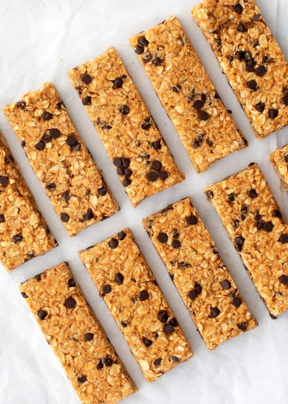

Granola Bars
Home

Description
It’s a breeze to make, and the bars are fantastic. They’re chewy, sweet, nutty, and studded with just the right amount of chocolate chips.
Ingredients
- Natural peanut or cashew butter
- Whole rolled oats
- Honey
- Sea salt
- Pepitas, crushed peanuts, or cashews
Steps
- First, stir together the wet ingredients – the cashew or peanut butter, honey, vanilla extract, and salt.
- Second, fold in the dry ingredients – the oats, chocolate chips, and pepitas. The mixture might seem dry at first, but keep stirring! Everything will be fully incorporated in no time.
- Next, press the bars into a parchment-lined baking pan. Scoop the mixture onto the bottom of the pan, and cover it with another sheet of parchment paper. Firmly press the mixture to the sides of the pan with your hands.
- Then, use the back of a measuring cup to smooth and flatten the tops of the bars.
- Finally, chill! Transfer the pan to the fridge, and allow the mixture to chill for one hour before you slice and eat the bars. That’s it!